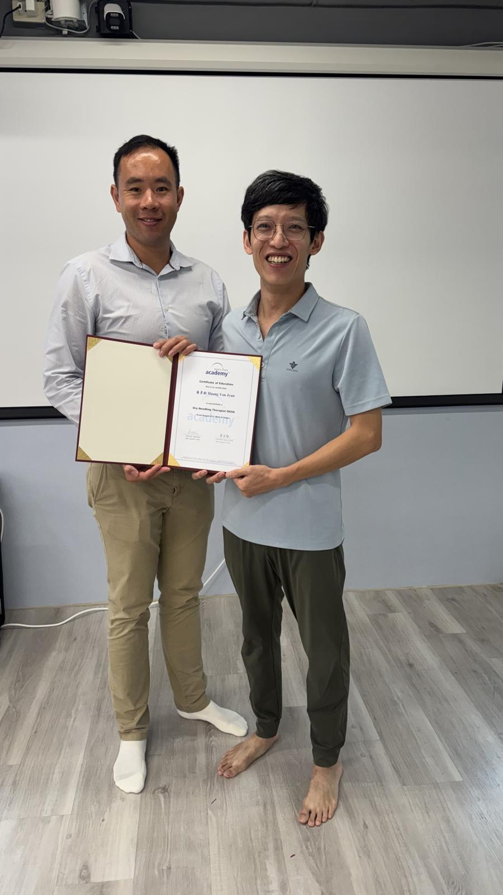
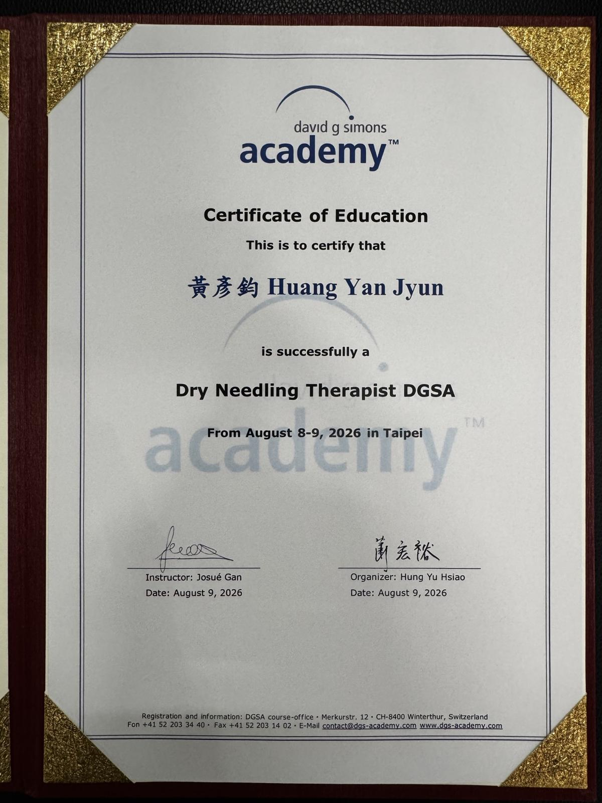
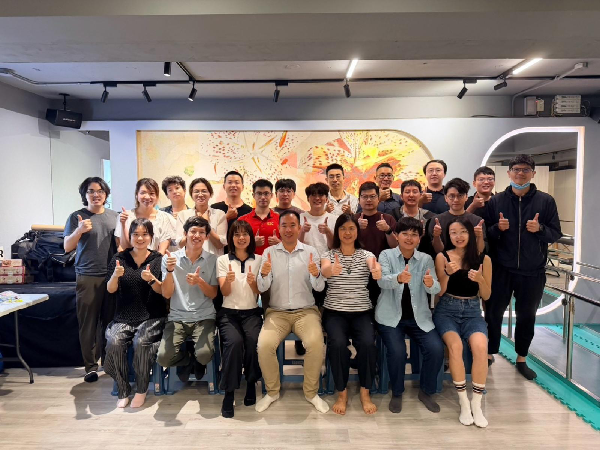
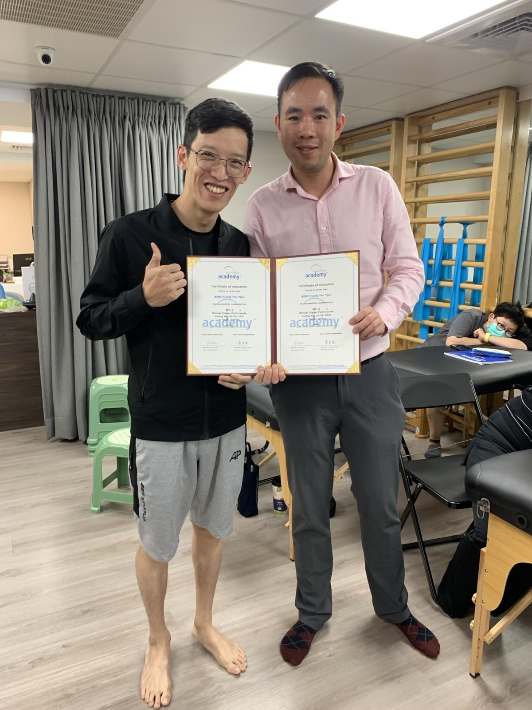
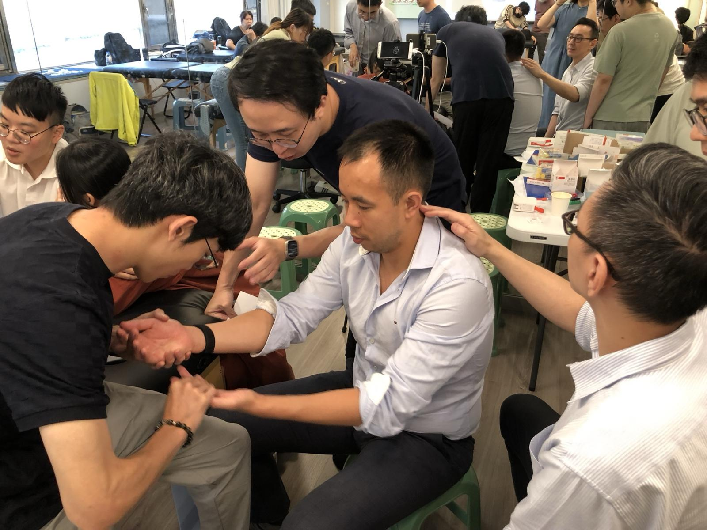
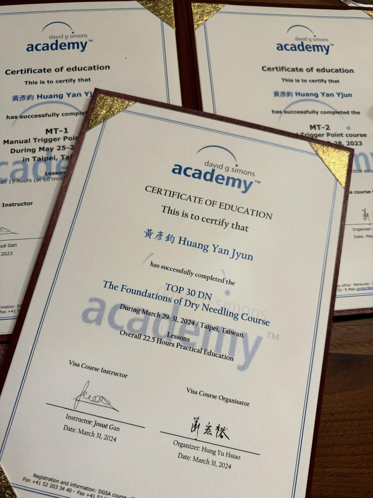
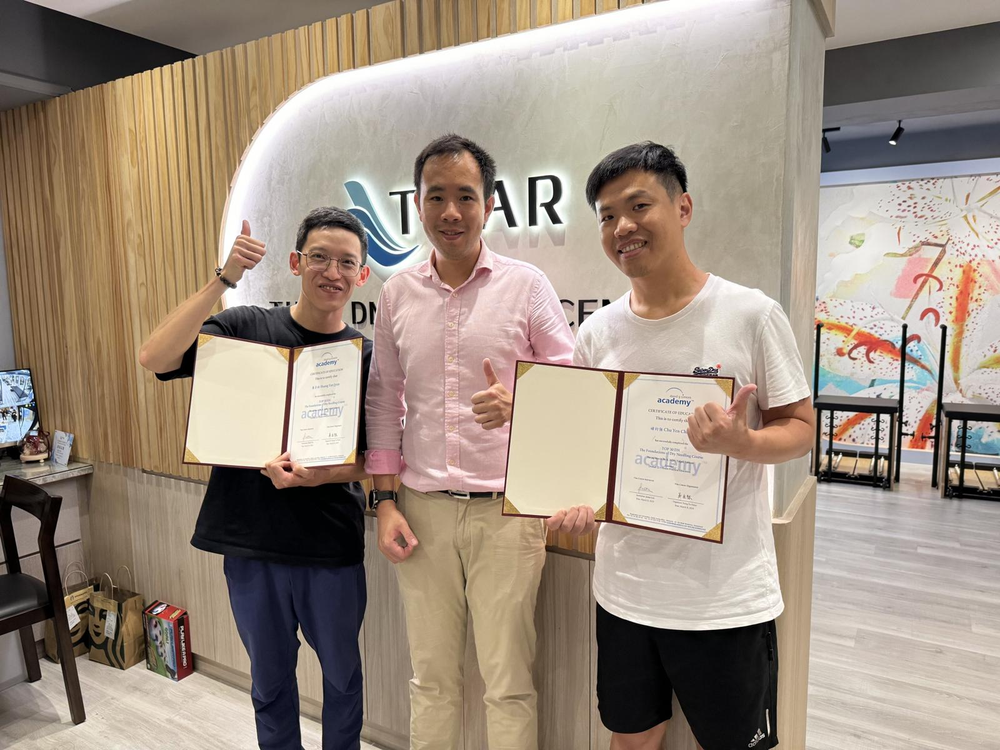
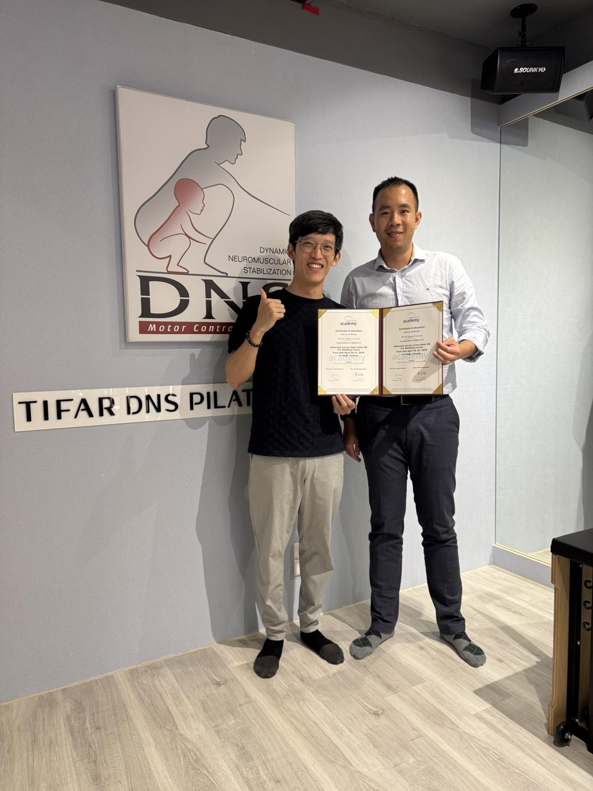
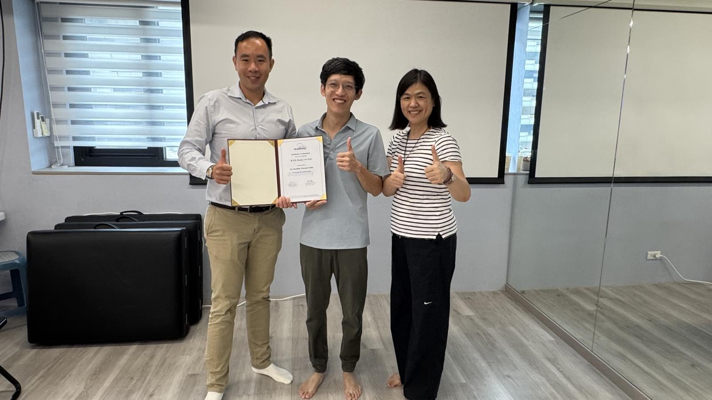

這雙手，走了三年
【這雙手，走了三年】
今天被關進一個小房間裡，只有我、老師，和我的手。
「這條肌肉有多大？從哪裡到哪裡？針尖朝哪個方向？要進多深？旁邊有什麼東西碰到會出事？」
這是 DGSA 乾針治療師的術科考試。三年的路，最後全濃縮在這個房間裡。
今天，我通過了。從 Josué Gan 老師手上，接過了 DGSA 認證乾針治療師（Dry Needling Therapist DGSA）的正式證書。
而這一切，要從三年前那雙被笑的手說起。
2023.05｜什麼都不懂，就衝了
那時候只是對肌筋膜疼痛與激痛點有興趣，看到宏甫第一次引進官方原廠課程的徒手班（MT），在什麼都還不知道的狀況下，抱著一股衝動就報名衝了進去。
第一天就被震撼。
老師對解剖肌群的清楚明白，用一個簡單的動作，就能把整條肌群引導出來、清晰地攤在眼前；每一條肌肉的位置、功能、神經控制、會產生什麼樣的臨床症狀，全都說得清清楚楚。
那四天，我心裡冒出一個念頭：這門學問，我要走完。全系列的治療師認證，我要拿到。
也是在那四天裡，一位物理治療師夥伴看了看我的手，笑著說：
「你應該沒在做徒手吧？」
跟他那雙手比起來，我的簡直是纖纖玉手、細緻無比。
於是那幾天，我開始狂練鉗捏。指法不會、指力不夠，就是一遍一遍地練。
當時完全沒想到，這個被笑出來的短板，日後會成為乾針技術裡最關鍵的一項能力。
2024.03｜TOP 30，另一套下針邏輯
隔年三月，我揪了幾個班上的同學朋友一起上 TOP 30，正式開啟乾針系列。
都是自己人，這次上得比第一堂放鬆許多。學理再聽一次，但抓找的肌群更多，而且開始實際操作乾針。
對中醫師來說，拿針當然不是新鮮事。但乾針是另一套邏輯——標的不是穴位，而是你親手觸診出來的那條緊繃帶與激痛點。手上先摸準，針下去才有意義。
TOP 30 是 DGSA 從臨床最常用的肌肉中挑出的 30 條，是乾針操作的全部基礎——學完，回到診間就能用。
朋友之間互相抓找、針來針去，其實滿好玩的。
而在那一次次的抓找裡，我發現：鉗捏對我已經完全不是障礙了。手腕一施力，就能穩穩 hold 住目標肌群。
一年前那雙纖纖玉手，開始有了工具的樣子。
2025.04｜地毯式，把整本課本跑過一遍
再隔年，進入乾針的進階上下肢課程。
上肢、下肢、中軸軀幹的重點肌群，地毯式跑過一輪，幾乎等於把激痛點聖經整本書的肌肉都走完了。
這次還跟冠宇學長一起，與 Josué 老師交流我們在東門學習的肌筋膜脈學，讓老師實際感受下針前後的脈象變化。摸脈不是他的專門，但他能明確感受到針刺前後筋膜張力的改變，如何客觀地反映在脈上。
一邊是西方的乾針，一邊是東方的脈診，在同一個當下對上了。
至此，乾針的基礎與進階都學完，臨床上也能操作自如。
2026.08｜考試，沒在跟你開玩笑
最後就是這個八月。
第一天，花一整天，把 71 條肌群硬核式跑過一輪：在哪裡、要怎麼擺位、怎麼找、什麼神經支配、負責什麼動作、危險區域該注意或避開哪些構造——全部再轟炸一次。
第二天，直接筆試加術科。
老實說，本來以為老師不會那麼狠，應該走個過場、歡樂考一下就過了。
結果從早上拿到考卷的那一刻開始，就越寫越不對勁。神經走向、動脈分支、解剖順序，能想到的通通來。
術科，就是開頭那個小房間。
一邊操作，老師一邊追問，問題一個接一個丟過來，族繁不及備載。
沒準備，真的會被宰。外國人來真的，一點都沒在跟你客氣。
今天
萬幸之下，總算通過了筆試與術科。
接過證書的那一刻，真的是超級開心，也有一點感動。
三年前那個什麼都不懂、只憑一股衝動就報名的自己；那雙被笑說「不像在做徒手」的手——今天，它拿到了。
謝謝自己這三年，沒有把它放掉。
而更讓我開心的是：一路一起走過來的朋友夥伴們，也全都過關了。
從今天起，台灣有了第一批 DGSA 認證的乾針治療師，而且幾乎清一色是台灣的中醫師。
這件事，對台灣的醫療絕對是好事。
最後，非常感謝引進這套系統的宏甫蕭老師與師母，讓我們在台灣，就能直接上到原廠的課、拿到原廠的認證。也謝謝這一路以來的夥伴們、課程翻譯，還有每一位後台的行政人員——一門課從無到有、到茁壯、到落地生根，靠的從來不是一個人，是每一個環節上的每一個人。
今天，是寫下歷史的一刻。
也期待在這個基礎之上，未來能有更多拿到原廠認證的乾針中醫師。
太初中醫診所 東門中醫
中醫師 黃彥鈞
#中醫師黃彥鈞 #乾針 #DGSA #肌筋膜疼痛 #激痛點








